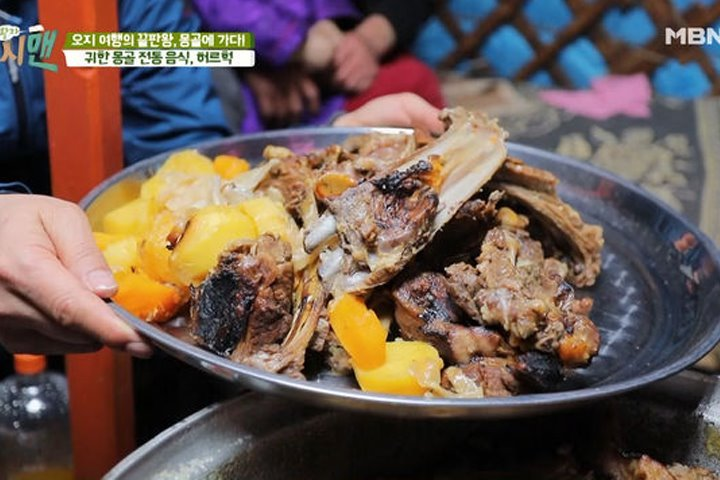

몽골 현지 음식 체험하기
몽골 음식은 육류, 밀가루, 유제품이 주를 이룹니다. 보즈, 호쇼르, 초이왕은 흔히 접할 수 있는 음식이죠. 그중 제일 대표적이 음식은 허르헉인데요. 허르헉은 큰 항아리에 양고기와 물, 돌을 함께 넣어 오랜 시간 쪄낸 음식입니다. 귀한 손님의 방문이나 집안의 대소사를 치를 때 내는 음식이라고 하네요.

몽골까지 갔으니 현지 술도 맛봐야겠죠? 마유주는 몽골 유목민들이 가장 즐겨 마시는 전통주입니다. 동물의 젖을 짠 후 1차 발효, 2차 발효를 거쳐 만드는 술인데요. 영양가가 뛰어나 손님에게 치즈와 함께 접대하는 것이 관습이라고 합니다.